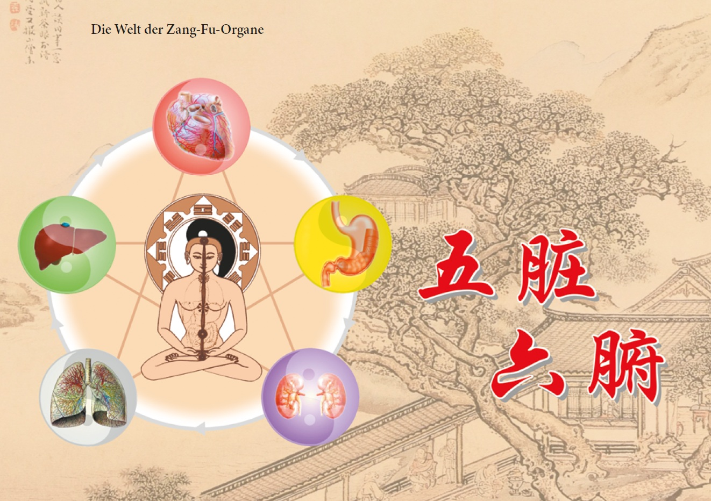
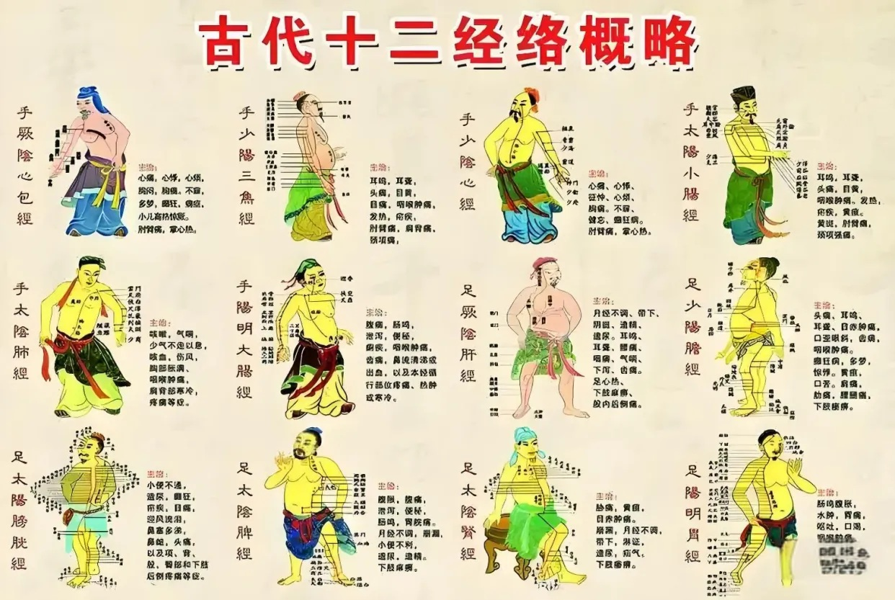
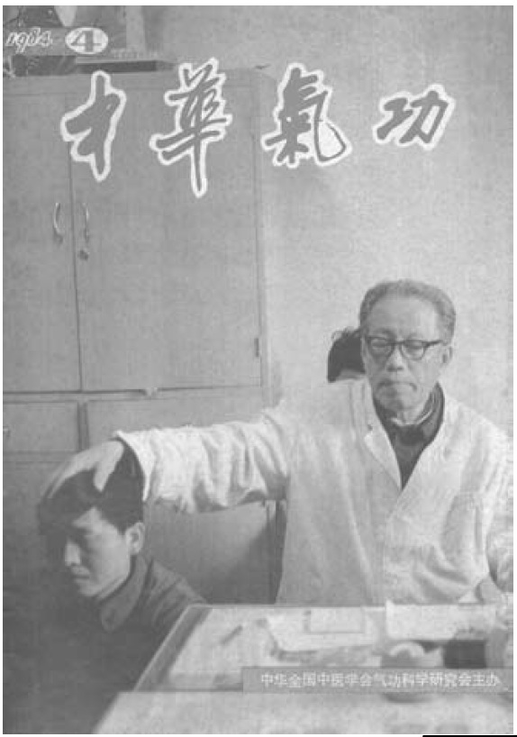

气功与传统中医
正统气功与中医
正统气功（植根于中国传统）与中医（TCM）是中国文化宝库中的两颗明珠。它们在历史长河中一脉相承，至今仍熠熠生辉。在某种程度上，正统气功构成了中医不可或缺的一部分，是中医理论体系及其临床实践的重要基石。尽管气功与中医在起源上关系密切，但自唐宋时期（618–907年及960–1279年）以来，两者间的联系逐渐疏离。结果，当今的中医从业者鲜有对气功有深刻理解者，而当代的气功大师也少有精通中医理论者。若要对这两个领域有深入的领悟，回溯并探究其共同的根源大有裨益。阴阳学说与五行学说是这两者共同的重要哲学基础。从历史渊源看，气功与中医同根同源；从内容实质看，它们同属于人体生命科学的范畴，且均植根于中国文化传统中身心合一的整体观。
在中医对人体生理与病理的研究中，重点在于观察形体、气与心神之间相互关系的外部表征，这种视角为疾病的预防、诊断和治疗提供了宝贵的见解。相比之下，气功则侧重于探究形体、气与心神之间的内在联系，从而构建起一套完整的修习体系。这种方式促进了身心健康的协同发展，并激发了人体成长的多种潜能。通过增强心神力量，修习者最终能够更好地掌控自身的身体活动。尽管气功与中医在路径上存在显著差异，但二者关注的核心对象是一致的，即人的生命。将两者结合，可以融汇成一套涵盖身心层面的综合性生命活动理论，其内容囊括了预防、病理、诊断、治疗及自我疗愈等多个方面。通过这些理论与实践，人们能够理解生命过程自我调节的原理，并加以运用，从而实现长寿与幸福的人生。

一种整体性的人生观
自古以来，中国学者便对人类与自然进行了深入的观察与研究。 通过类比、综合与推演，并在此基础上不断深化认识，他们逐 步形成了一种整体性的视角。在这种视角下，人类与宇宙被视 为一个统一的整体，正如身与心、或人体各组织器官被视为一 体那样。这一视角不仅是中国文化的独特成就，也构成了气功 与中医共同的理论基石。下文将探讨其核心内涵。
天人合一
中国学者历来将人视为“小宇宙”，并将其看作宏观宇宙（即大宇宙）不可分割的一部分。在此背景下，他们探讨了“万物”运动与变化的整体性规律。早在《黄帝内经》中，便已阐述了小宇宙与大宇宙浑然一体的观念；该书详细论述了四季更迭如何影响人类活动，而这一基本原理亦可有效地应用于养生保健。例如，人们应在春夏两季养护阳气，而在秋冬两季侧重于调养阴气。情绪、睡眠及饮食习惯也应顺应四季的节律，以实现人体小宇宙与外部大宇宙之间阴阳的和谐统一。具体而言，春季宜少食酸味、多食甘味；夏季饮食应清淡少油；秋季适宜增加酸味食物的摄入；冬季则应减少寒凉饮食。这些准则直接体现了养生智慧。当这一顺应时令的原则应用于生理与病理领域时，便构成了中医“天人相应”思想的体现；在考量经络气血随时间流转变化的针灸疗法及草药治疗中，这一原则尤为重要。 近几十年来，关于“人是小宇宙、宇宙是大宇宙”这一整体观的有效性，已多次得到科学证实。例如，1967年至1972年间，印度各医院记录到的心脏病发作病例出现了显著增加。
这一现象直接归因于地球磁能的变化，而当时地球正受到太阳活动的强烈影响。此外，43项医学测试表明，这一宇宙现象影响了受试者的血压，并导致其白细胞计数发生变化。这些观察结果有力地支持了“天人合一”的观点。因此，上述现象可被视为人体这一“小宇宙”与浩瀚宇宙这一“大宇宙”之间相互关联的体现。
身心合一
中国古代学者很早就确信，人是身心的统一体，二者通过“气”相互连接。身体被视为生命活动的载体，心（或精神）是主导者，而“气”则是生命信息的体现。由于强调了心在其中的主导作用，心在人类生命活动中被赋予了至关重要的地位。 这种将身心视为统一体的传统中国观念，与现代主流医学的视角有着本质区别。尽管主流医学在解剖学、组织学和神经生理学等领域拥有确凿的研究成果，但迄今为止，其研究主要局限于可见的物质层面。正因如此，它往往忽视了心的功能及其对所有生命过程的持续影响。而在西方的心理学领域，虽然人们研究人类情绪与行为之间的联系，却并不涉及关于“气”的认知。 尽管现代医学已开展了广泛而深入的研究，但其对人类生命的认识仍不完整。相比之下，传统中国科学对个体人体的研究虽未像现代医学那样高度发达，却能更好地阐明支配人类生命活动整体性的原理。
人体组织的统一性
人体组织的统一性体现了人体的有机整体性。这一观点认为，人体的各个部分——从皮肤、肌肉、筋腱、骨骼和神经系统到内脏器官——都是相互关联的，无法彼此独立存在。 内脏器官构成了这一系统的核心。《黄帝内经》中已包含了关于此课题的丰富内容。根据中国传统观念，人体的有机统一性（进而构成整体性）源于经络系统。该系统不仅将人体内部各部位相互连接，还将内部与体表及四肢贯通起来。唯有通过“气”在经络及全身三百六十多个穴位间的运行，人类的生命活动才得以实现。 人体的每一个部位都能反映出生命活动的状况。这一事实进一步印证了人体的整体性特征。由于“气”遍布全身并传递信息，即使是内部的变化，也能在一定程度上显现于体表可感知的特定区域。 例如，内脏的状况可以反映在舌色或眼部的外观上；通过诊脉，也能判断内脏的变化。此外，体内任何部位的状态，都能通过体表的可见征象（如肤色变化）显现出来。
总之，上述这种涵盖了人与宇宙、身与心以及人体各组织器官的整体观，构成了气功与中医共同的理论基石。而经络理论及对“气化”过程的理解，则可视为这一整体观的具体体现。
气与“气化”：中医理论的基石
经络理论与对“气化”过程的理解，构成了中医理论的重要基础。 历代医家都极为重视对经络的研究。例如，《黄帝内经》指出，十二经脉必须保持畅通无阻。书中进一步阐述道：“十二经脉主生死，处百病，调虚实。”经络对人体的生命活动至关重要，因而也是中医理论与实践的核心要素。若将经络与气进行比较，气代表“内容”或“实质”，而经络则是气运行的通道；气的功能正是通过经络得以实现的。
从某种意义上说，经络可被视为发挥着“气”的功能。在拓展中医理论基础时，中国学者高度重视“气化”（即由气推动的转化过程）这一概念。
因此，可以说“气”构成了中医理论体系的核心。各类“气”均有其特定的名称。本文主要阐述“真气”，它涵盖了先天之气、后天之气以及气化过程。
发生在不同层面的代谢过程构成了生命活动的基础。这些代谢过程在“气”的协助下，各自执行着相应的转化功能；而维持人体生命活动所需的“气”，反过来又由代谢过程所生成。在这种相互作用的过程中，“气化”与“化气”（即通过转化生成气）相辅相成。这一过程构成了人体生命活动的基础。 “气”是脏腑与经络活动的基本物质基础，同时也作为一道保护屏障，抵御诸如“病邪之气”等不良因素的侵袭。中医认为，疾病由多种致病因素引发，进而导致人体内气血失调。外部致病因素包括所谓的“六淫之气”，内部因素则包括与“七情”相关的致病之气。然而，若人体“正气”充盛且在经络中运行通畅无阻，疾病便难以侵袭。气功锻炼有助于增强正气，从而稳固健康。同时，这些练习能构筑一道有效的屏障，抵御负面能量——这对所有人，尤其是医务人员、治疗师及社会服务工作者而言，都至关重要。在中医理论中，疾病的治疗在于增强患者的“气”，并激活由气驱动的转化过程，从而使患者恢复到正常且充满活力的状态。尽管中医治疗手段多种多样，但其核心目标始终是祛除病邪之气、培植正气，并促进阴阳平衡，恢复气血之间的和谐关系。气功、针灸和推拿按摩无需药物，即可通过激活体内之气来达到治疗目的。 这些方法直接作用于经络，因而能产生迅速而显著的疗效。
气与经络的存在
经络理论与对“气”所驱动的转化过程的理解，均已有两千多年的历史。然而，即便在当今科技时代，经络的物质基础及其本质仍未得到明确解释。中国在多层面上对经络进行了深入探索，并不断开发新的研究方法，这方面的贡献值得肯定。20世纪下半叶，人们发现了一种能使针灸达到与常规麻醉同等效果的技术；如今，针对经络沿线“气”的反应现象（即“得气”现象），也已能够进行专门的观测。尽管关于经络的研究尚处于起步阶段，但迄今为止的研究结果表明，经络确实存在于人体内，并构成了一个独特的系统。 中国的研究还探讨了在“发放外气”过程中外气（Waiqi）所产生的物理效应，这为证实“气”的存在做出了重要贡献。
作为少林内劲一指禅流派的代表，姚金圣大师及其弟子曾在国内多所高校开展了外气发放实验。这些实验检测到了一种特定类型的低频红外辐射，其特性与人体通常散发的热辐射有着显著区别。
中国科学界推测，这种特定的辐射是气功大师体内之气所蕴含信息的一种外在表现。实验结果表明，“气”可被归类为一种物质形态。基于对气功大师所发外气信息的深入研究，科研人员开发出了一种能够利用相关红外辐射进行治疗的设备，并已成功应用于临床实践。这种疗法在中国被称为“气信息疗法”。 可以预见，未来对气功的深入研究将有助于进一步揭示经络的本质、气介导的转化过程以及中医（TCM）的其他理论内涵。

气功实践：中医理论的重要源泉
中国历史表明，中医理论是在与疾病长期抗争及气功实践的过程中逐步建立起来的。在这一过程中，中医理论经历了两种截然不同的发展形式：一种基于感官感知，另一种则基于理性认知。 在古代中国，人们在与自然共处的生活中积累了日益丰富的治病经验。例如，树枝或石块偶然刺入身体，竟意外治愈了某些病痛；此类观察为针灸技术的发展奠定了基础。有时，摄入某些物质能消除病痛；草药疗法便源于此类经验。然而，以这种方式获得的医学知识往往片面且不完整，因为它仅仅依赖于经验的重复。这些原始知识源于所谓的“外功”实践，尚未触及疾病的内在机理或人体生命活动的奥秘。因此，这一发展阶段被归类为感官感知层面。相比之下，中医理论——至少是作为中医奠基之作的《黄帝内经》中所阐述的理论——并非仅仅建立在古人的经验性知识之上，而是通过气功实践逐步形成的。要理解这一点，有必要深入探讨气功理论与实践的基本内涵。 中国传统正统气功的理论建立在阴阳五行学说、《易经》、八卦数理以及天干地支等体系之上。气功源流众多，各流派侧重点各异；然而，就人体内部的运动与变化而言，正统气功理论始终立足于脏腑经络学说以及对“气化”过程的理解。中国拥有多种气功流派与体系，每种流派都伴随着独特的感知方式。并非所有气功形式都能让人感知身心的内在景象；能否实现这一点，取决于各流派所采用的具体功法。当练习者能够在修习过程中感知并观察到脏腑活动、经络系统以及气化过程时，生命运动的奥秘便会直接显现。能够促成这种感知的著名气功功法包括“小周天”功法（气循环练习）、某些传统道家功法，以及本书所介绍的“少林内劲一指禅”体系。根据气功与中医理论，“精、气、神”这“三宝”构成了人类生命的根基。气功的一切功效均源于这三宝的相互转化，而这一过程是通过经络系统及气化机制来实现的。经络作为真气的运行通道，在气功练习中是可以被直接感知的。相比之下，机体内部的各种运动与变化，体现了“气”的特性以及由“气”所引发的转化过程。这些方面共同构成了身心的内在图景——通过气功修炼，人们可以不断加深对这一图景的理解。在中国，这种认知途径被称为“内功”修炼法。人们最初通过“外功”获得感官层面的体悟，随后通过“内功”获得理性的认知。在气功与中医的持续探索及实践验证中，经络理论、关于“气”之转化的认知以及整个中医理论体系得以逐步建立。因此，气功修炼可被视为中医的重要源头之一。
气功：中医临床应用的基础
在中国古代，气功锻炼被视为中医训练不可或缺的一部分。诸如秦代（公元前221–206年）的扁鹊、东汉（约公元25–220年）的华佗、唐代（公元618–907年）的孙思邈以及明代（公元1368–1644年）的李时珍等著名医家，不仅对气功有着深厚的理论造诣，更拥有丰富的个人修炼实践经验。下文将阐述气功对中医为何具有如此重要的意义。如前所述，中医理论源于气功实践及医疗过程中的感悟。其中，经络学说与关于“气”之转化过程的理解尤为关键。然而，由于现代科学尚无法清晰阐释这些理论，人们往往难以透彻理解它们。通常，唯有通过自身气功实践、亲身体察身心内在景象的人，方能真正领悟其中奥义。若缺乏此类亲身体验，便难以真正理解中医体系中的生理与病理概念，以及针灸和草药疗法。在此情况下，相关理论的实际应用往往流于表面，仅限于尝试性操作或机械模仿。若无气功带来的身心内在体察，古代医家断然无法如此深刻地理解并运用中医理论。因此，从某种意义上讲，气功可被视为中医理论体系的基石及其临床应用的根本。 掌握气功的全面知识并具备扎实的个人实践经验，能助人达到中医诊疗的最高境界。气功的这一积极作用在《黄帝内经》中便已有所论述。书中对比了两种类型的医者：一类主要关注生理过程，另一类则侧重于身心的统一。前者运用中医的辨证施治方法，通过问诊、切脉等手段探寻病因，却无法感知疾病在体内的演变过程。相比之下，后者修习气功，从而获得了一种感知身心内在景象的特殊能力。此类医者无需问诊或切脉，便能直观地洞察病因及病情的演变。只有通过特定的气功体系，才能获得此类能力。
这些能力不仅是气功大师日常生活的一部分，本书作者对此也十分熟悉。例如，在瑞士举行的一次国际气功聚会上，一位女士前来向他咨询。仅凭直觉，作者在短短几秒钟内便判断出她患有卵巢炎症。随后的交谈中，该患者惊讶地证实了这一诊断的准确性。时至今日，在中国，此类能力仍是部分气功大师诊治患者的主要依据。 气功不仅在诊断领域，在治疗领域也发挥着重要作用。中医的治疗手段主要包括药物疗法、针灸、推拿按摩以及气功练习。除药物疗法外，其余各项均与气功有着密切联系。特别是推拿按摩与气功疗法的疗效，直接取决于治疗师自身的气功造诣。一些运用穴位的高深技法，同样建立在扎实的气功理论基础之上；这些技法被称为“气功针法”。在运用这些技法时，治疗师通过意念引导“气”的运行，直接施展气功手段——根据气功理论，“气”会自然地随从意念而动。在此基础上，治疗师能够恢复患者经络中气机的自由、和谐流动，并利用针刺疗法治愈现有的病症。气功针刺技术至今仍在中国成功应用。

然而，在中华文化圈内还存在着另一种真正独特且别具一格的方法。在这种方法中，气功大师通过“发放外气”——即向患者输送气——来进行治疗（图74）。这种疗法有时能带来立竿见影的缓解效果，甚至能彻底消除包括复杂慢性病在内的各种疾患。本书作者本人也拥有运用此法的实践经验。在法国举办的一次研讨会上，一位女士参与了治疗；她当时左肩剧痛已持续数月，手臂活动严重受限，此前尝试的各种疗法均告失败。然而，仅仅经过几分钟的能量输送，她的疼痛便显著减轻。到了第二天，疼痛已完全消失，手臂的活动范围也恢复了正常。综上所述，气功在传统中医（TCM）的临床应用中发挥着至关重要的作用。 气功与中医都是人类生命科学的重要组成部分。纵观历史，不仅气功大师，许多中医医师也为气功的发展做出了宝贵贡献。气功实践既是中医理论的重要源泉，也构成了其中医临床应用的重要基石。正如当下一样，气功与中医在未来仍将保持紧密的联系，相互促进，共同发展。
通过气功重获健康
博大精深的“阴阳哲学”构成了气功与传统中医共同的理论基石。此外，五行学说、脏腑学说以及经络学说，也对二者产生了至关重要的影响。 气功与传统中医的另一个本质共通之处，在于它们都秉持着一种对人体的“整体观”。这种整体观不仅关注身体、心灵与灵魂之间的统一性，同 时也高度重视个体生命与社会环境之间的互动关系，以及人与大自然之间那种密不可分的紧密联系。中医与气功在发展演变过程中紧密相连。气 功常被誉为“中医之母”，因为若没有它对“气”这一能量的深刻理解，许多现代医学检查和治疗方法都将无从谈起。如今，气功与针灸、按摩、 中药和营养并列为中医五大支柱之一。
疾病的成因
根据传统中医理论，人体能量流动的失衡与阻滞，正是导致疾病产生的根本原因。生活中的内在与外在因素均可能引发此类阻滞——其中包括但 不限于：不健康的饮食习惯、环境毒素、不良的生活习性、长期累积的压力，以及愤怒、不满、嫉妒和暴怒等负面情绪。
气功：预防与疗愈之道
正统的气功修行始终致力于化解体内的阻滞，并促进“气”——即生命能量——的顺畅运行。因此，气功被视为一种理想的养生法门，既可用于 预防疾病的发生，亦可助人通过自我修习来疗愈已患的疾病。通过气功功法的练习，人体能够汲取并充盈全新的生命能量。一旦体内的阻滞得以 消除，那些已耗散的能量、积存的毒素及无益的代谢废物便能顺畅地排出体外。由此，气在经脉中的运行将变得通达无碍；情绪状态亦随之归于 和谐，身与心之间的内在交流亦将恢复其自然、顺畅的状态。
实践证明，正统的气功疗法在疾病预防方面成效显著；同时，对于以下各类疾病及健康困扰，气功亦能发挥极佳的辅助治疗或针对性疗愈作用.